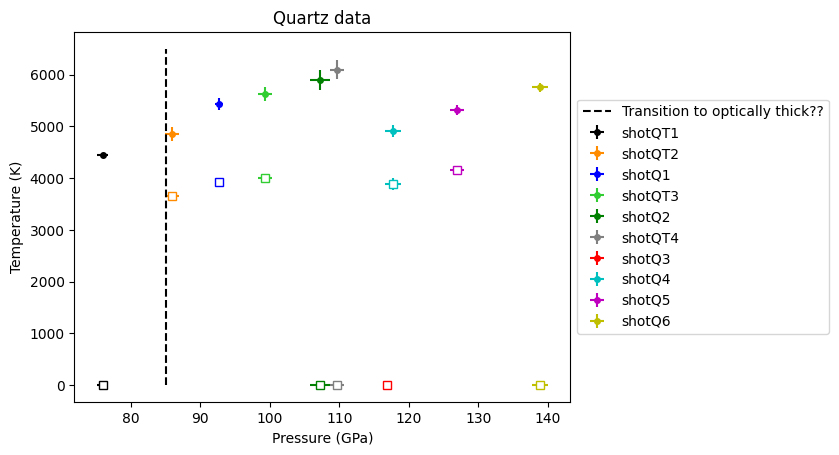
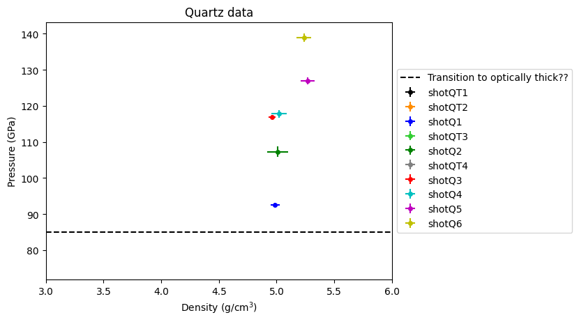
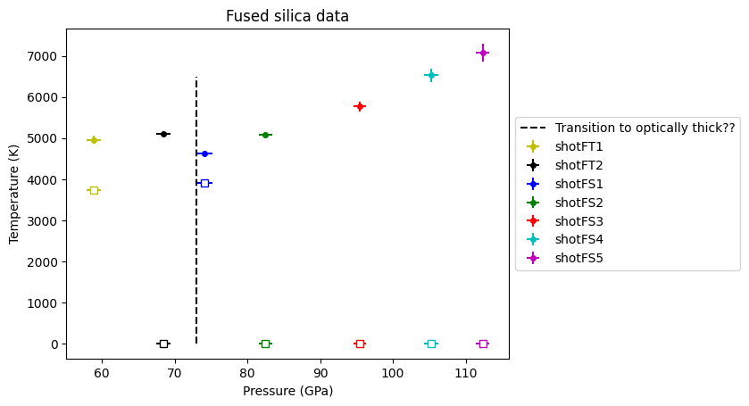
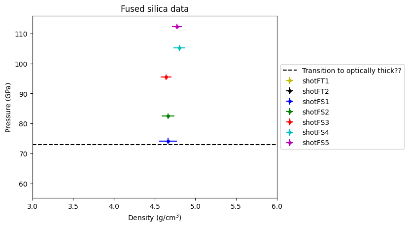

Impedance Match For Lyzenga et al. 1983 Data#
See IM-MC-lyzenga.ipynb for IMMC fits. This notebook reads in the result and plots them.
NOTE
Some data points have no impact conditions and only report Pressure and Temperature. So no Us-Up or density information.
Data points are a mix of z-cut and perpendicular to z-cut (unknown) orientation. One point has no description of orientation. See table below.
Date and time: 2026-10-25 15:52:03.045032
/home/runner/work/silica-supplement/silica-supplement/silica-book/imp-match-Lyzenga/IM_module.py:859: SyntaxWarning: invalid escape sequence '\g'
ax3.plot(1/self.hug.varr/1.e3,self.hug.garr,label='$\gamma(v)$')
/home/runner/work/silica-supplement/silica-supplement/silica-book/imp-match-Lyzenga/IM_module.py:860: SyntaxWarning: invalid escape sequence '\g'
ax3.plot(1/self.hug.varr/1.e3,self.g0*self.hug.varr/self.v0,'--',label='$\gamma_0$/$v_0$=const')
Choose load pickle file or re-run Monte Carlo Impedance Match#
When compiled for the Jupyterbook, using N=50.
N=1000 run used for error bars and plots at the bottom.
# Run the MC again
#RUNMC = True
# Load the pickle file; do not run; set to False to compile the Jupyterbook
RUNMC = False
# set number of IM calcs
#N=50
N=1000
Load the material database#
# load the materials data table; change matfilename if not using default
matdata, imat = IM.ReadMaterials(matfilename='materials-data.csv')
display(matdata)
| Material | Density(kg/m3) | rho0_err | c0(m/s) | c0_err | s1 | s1_err | s2(s/m) | s2_err | d(s/m) | d_err | g0 | g0_err | q | q_err | up_low(m/s) | up_high(m/s) | IHED_id | Date | Notes | |
|---|---|---|---|---|---|---|---|---|---|---|---|---|---|---|---|---|---|---|---|---|
| 0 | Tantalum2023 | 16649.0 | -1 | 3289.00000 | 0.025 | 1.313000 | 0.011 | 0.000000 | -1.0 | 0.000000 | 0.0 | 1.62 | -1 | 1.00 | -1 | 0.0 | -1.0 | 75 | 2023-09-10 | AGU Reference Shelf+Katahara et al. 1979+Cohen... |
| 1 | Steel304-l2 | 7870.0 | -1 | 4580.00000 | -1.000 | 1.490000 | -1.000 | 0.000000 | -1.0 | 0.000000 | 0.0 | 2.20 | -1 | 1.00 | -1 | 170.0 | 3607.0 | 347 | 2023-09-04 | STS refit Duffy+IHED RECOMMENDED |
| 2 | Fused-qtz-stv | 2204.0 | -1 | 1382.81770 | -1.000 | 1.535125 | -1.000 | 0.000000 | 0.0 | 0.000000 | 0.0 | 0.65 | -1 | 1.00 | -1 | 2800.0 | 4000.0 | 143 | 2023-09-04 | STS fit to stv region RECOMMENDED |
| 3 | qtz-CaCl2-region | 2650.0 | -1 | 1797.25088 | -1.000 | 1.688354 | -1.000 | 0.000000 | -1.0 | 0.000000 | 0.0 | 1.00 | -1 | 1.00 | -1 | 0.0 | -1.0 | 174 | 2023-09-04 | Stewart fit CaCl2 region RECOMMENDED |
| 4 | Aluminium 6061 | 2683.0 | -1 | 5349.00000 | -1.000 | 1.338000 | -1.000 | 0.000000 | -1.0 | 0.000000 | 0.0 | 1.00 | -1 | 1.00 | -1 | -1.0 | -1.0 | 324 | 2022-11-11 | Duffy & Ahrens 1998 NEED TO ADD Z data |
| 5 | Steel 304 | 7870.0 | -1 | 4580.00000 | -1.000 | 1.490000 | -1.000 | 0.000000 | -1.0 | 0.000000 | 0.0 | 2.20 | -1 | 1.00 | -1 | 209.0 | 1485.0 | 347 | 2022-11-11 | Duffy & Ahrens 1998 |
| 6 | Steel304-q | 7870.0 | -1 | 4579.00000 | -1.000 | 1.533428 | -1.000 | -0.000014 | -1.0 | 0.000000 | 0.0 | 2.20 | -1 | 1.00 | -1 | 170.0 | 4730.0 | 347 | 2022-11-11 | STS refit Duffy+IHED 9/4/2023 NOT RECOMMENDED |
| 7 | Copper | 8924.0 | -1 | 3975.00000 | -1.000 | 1.471000 | -1.000 | -0.000005 | -1.0 | 0.000000 | 0.0 | 1.96 | -1 | 1.00 | -1 | 0.0 | 40800.0 | 45 | 2022-11-11 | IHED fit; g0 Gilev 2018 and q is quess |
| 8 | Tantalum | 16649.0 | -1 | 3310.00000 | -1.000 | 1.306000 | -1.000 | 0.000000 | -1.0 | 0.000000 | 0.0 | 1.62 | -1 | 1.00 | -1 | 0.0 | -1.0 | 75 | 2022-11-11 | AGU Reference Shelf+Katahara et al. 1979+Cohen... |
| 9 | Tungsten | 19235.0 | -1 | 3994.00000 | -1.000 | 1.278800 | -1.000 | -0.000005 | -1.0 | 0.000000 | 0.0 | 1.81 | -1 | 0.71 | -1 | 0.0 | 16450.0 | 79 | 2022-11-11 | IHED fit and Litasov 2013 for gamma |
| 10 | PMMA | 1186.0 | -1 | 2817.00000 | -1.000 | 1.389000 | -1.000 | -0.000005 | -1.0 | 0.000000 | 0.0 | 0.30 | -1 | 1.00 | -1 | 0.0 | 17000.0 | 130 | 2022-11-11 | Duffy & Ahrens 1998 - updated to IHED fit g0 f... |
| 11 | Fused-qtz-low | 2204.0 | -1 | 7906.00000 | -1.000 | 0.948600 | -1.000 | 5.455000 | -1.0 | 0.000412 | 0.0 | 0.65 | -1 | 0.00 | -1 | 1000.0 | 10000.0 | 143 | 2022-11-12 | STS fit to 2<up<10 km/s const gamma |
| 12 | Fused-qtz-all | 2204.0 | -1 | 6239.60000 | -1.000 | 1.153600 | -1.000 | 3.413300 | -1.0 | 0.000346 | 0.0 | 0.65 | -1 | 0.00 | -1 | 7000.0 | 18300.0 | 143 | 2022-11-13 | STS fit to all IHED and Root Z data const gamma |
| 13 | Fused-qtz-root | 2200.0 | -1 | 4925.00000 | -1.000 | 1.234000 | -1.000 | 2.074000 | -1.0 | 0.000352 | 0.0 | 0.65 | -1 | 0.00 | -1 | 7000.0 | 18300.0 | 143 | 2022-11-12 | Root-Townsend-2019 Universal Hugoniot const gamma |
| 14 | LiF | 2650.0 | -1 | 5181.00000 | -1.000 | 1.306000 | -1.000 | 0.000000 | -1.0 | 0.000000 | 0.0 | 1.60 | -1 | 1.00 | -1 | -1.0 | -1.0 | 162 | 2022-11-11 | Duffy & Ahrens 1998 & IHED |
| 15 | Basalt-hpp-quad | 2800.0 | -1 | 3125.00000 | -1.000 | 1.269000 | -1.000 | 0.000037 | -1.0 | 0.000000 | 0.0 | 1.39 | -1 | 1.00 | -1 | 2000.0 | 5940.0 | 635 | 2022-11-11 | AGU Reference Shelf and OA72 sts quad fit to I... |
| 16 | Basalt-hpp-ulh | 2800.0 | -1 | 5397.00000 | -1.000 | 1.279000 | -1.000 | 2.550000 | -1.0 | 0.000447 | 0.0 | 1.39 | -1 | 1.00 | -1 | 500.0 | 5940.0 | 635 | 2022-11-13 | AGU Reference Shelf and OA72 sts ULH fit to IH... |
| 17 | Water-ulh | 998.0 | -1 | 1336.00000 | -1.000 | 1.338500 | -1.000 | -1.236000 | -1.0 | 0.000354 | 0.0 | 0.85 | -1 | 0.21 | -1 | 3000.0 | 35000.0 | 122 | 2022-11-11 | IHED fit with univeral liquid Hugoniot |
| 18 | Ice | 910.0 | -1 | 1593.00000 | -1.000 | 1.440000 | -1.000 | 0.000000 | -1.0 | 0.000000 | 0.0 | 0.85 | -1 | 0.21 | -1 | 0.0 | -1.0 | 184 | 2022-11-11 | Stewart & Ahrens 2005 & fit to IHED data |
| 19 | qtz-dNiAs-region | 2650.0 | -1 | 720.99782 | -1.000 | 2.057952 | -1.000 | 0.000000 | -1.0 | 0.000000 | 0.0 | 1.00 | -1 | 1.00 | -1 | 0.0 | -1.0 | 174 | 2023-08-06 | Stewart fit |
| 20 | qtz-zcutHEL | 2650.0 | -1 | 6319.00000 | -1.000 | 1.289000 | -1.000 | 0.000353 | -1.0 | 0.000000 | 0.0 | 1.00 | -1 | 1.00 | -1 | 0.0 | -1.0 | 174 | 2023-08-07 | Tracy & Duffy Zcut HEL fit |
| 21 | sapphire | 3977.0 | -1 | 8686.00000 | -1.000 | 0.962700 | -1.000 | 0.000000 | -1.0 | 0.000000 | 0.0 | 1.00 | -1 | 1.00 | -1 | 1940.0 | 5947.0 | 455 | 2023-08-02 | Stewart fit to IHED data did not look up gamma... |
Set up the materials and uncertainties - MKS UNITS#
covariance matrices are from Hugoniot fits
currently all linear fits – need to update IM_module for other forms
# everything in mks
# set up independent particle velocity array
up =np.arange(501)/500*10000
# initialize materials used in this notebook
# flyer
Ta2023a = IM.Material() # create material object named 'mat3'
matname='Tantalum2023' # material name in the material-data.csv file
Ta2023a.DefineParamsID(matname,matdata,imat) # load the parameters for this material
Ta2023a.MakeHugoniot(up)
Ta2023a.rho0_err = 10
Ta2023a.cov = np.asarray([[ 1.31441527e-04, -2.62935631e-01], [-2.62935631e-01, 6.24772442e+02]])
Ta2023a.lmat = linalg.cholesky(Ta2023a.cov,lower=True)
# driver
Ta2023b = IM.Material() # create material object named 'mat3'
matname='Tantalum2023' # material name in the material-data.csv file
Ta2023b.DefineParamsID(matname,matdata,imat) # load the parameters for this material
Ta2023b.MakeHugoniot(up)
Ta2023b.rho0_err = 10
Ta2023b.cov = np.asarray([[ 1.31441527e-04, -2.62935631e-01], [-2.62935631e-01, 6.24772442e+02]])
Ta2023b.lmat = linalg.cholesky(Ta2023b.cov,lower=True)
# target FQ stv region
FQstv = IM.Material() # create material object named 'mat3'
matname='Fused-qtz-stv' # material name in the material-data.csv file
FQstv.DefineParamsID(matname,matdata,imat) # load the parameters for this material
FQstv.MakeHugoniot(up)
FQstv.rho0_err = 10
FQstv.cov = np.asarray([[ 0.0065196 , -0.02354445],[-0.02354445, 0.08556451]])
FQstv.lmat = linalg.cholesky(FQstv.cov,lower=True)
# target QTZ CaCl2 region
QTZcacl2 = IM.Material() # create material object named 'mat3'
matname='qtz-CaCl2-region' # material name in the material-data.csv file
QTZcacl2.DefineParamsID(matname,matdata,imat) # load the parameters for this material
QTZcacl2.MakeHugoniot(up)
QTZcacl2.rho0_err = 10
QTZcacl2.cov = np.asarray([[ 0.00019996, -0.00083886],[-0.00083886, 0.00353192]])
QTZcacl2.lmat = linalg.cholesky(QTZcacl2.cov,lower=True)
Load shot dataset#
Loading initial density, flyer velocity, shock velocity, temperatures
sio2dat = pd.read_csv('lyzenga-all.csv')
display(sio2dat)
| shot | sample | rho0 | rho0_std | uflyer | uflyer_std | uflyer_source | us | us_std | us_source | orientation | T | T_std | T_source | T_rel | T_rel_std | T_rel_source | P | P_std | Notes | |
|---|---|---|---|---|---|---|---|---|---|---|---|---|---|---|---|---|---|---|---|---|
| 0 | Q1 | Perp Z-cut Alpha Quartz | 2.648 | 0.002 | 5.172 | 0.007 | xray | 8.64 | 0.06 | pyrometry | a | 5430.0 | 120.0 | Boslough88 | 3920.0 | 70.0 | Boslough88 | 92.5 | 1.0 | Pressures from Lyzenga et al. 1983 |
| 1 | Q2 | Z-cut Alpha Quartz | 2.648 | 0.002 | 5.620 | 0.010 | xray | 9.27 | 0.16 | pyrometry | b | 5900.0 | 200.0 | Boslough88 | 0.0 | 0.0 | NaN | 106.5 | 1.9 | Probably same as 107.8 P,T point; assumed to b... |
| 2 | Q3 | Unknown Alpha Quartz | 2.648 | 0.002 | 5.871 | 0.010 | xray | 9.73 | 0.06 | streak camera | NaN | 0.0 | 0.0 | NaN | 0.0 | 0.0 | NaN | 116.0 | 1.4 | Reported in Table 3; no orientation info; no pyro |
| 3 | Q4 | Z-cut Alpha Quartz | 2.648 | 0.002 | 5.926 | 0.011 | xray | 9.70 | 0.12 | pyrometry | b | 4910.0 | 110.0 | Boslough88 | 3890.0 | 110.0 | Boslough88 | 116.5 | 1.0 | a=shock perpendicular to (0001) axis |
| 4 | Q5 | Perp Z-cut Alpha Quartz | 2.648 | 0.002 | 6.297 | 0.012 | xray | 9.82 | 0.10 | pyrometry | a | 5320.0 | 90.0 | Boslough88 | 4150.0 | 20.0 | Boslough88 | 126.6 | 1.0 | b=shock paraelle to (0001) axis=z cut |
| 5 | Q6 | Z-cut Alpha Quartz | 2.648 | 0.002 | 6.600 | 0.012 | xray | 10.30 | 0.10 | pyrometry | b | 5760.0 | 90.0 | Boslough88 | 0.0 | 0.0 | Boslough88 | 137.0 | 1.0 | NaN |
| 6 | QT1 | Perp Z-cut Alpha Quartz | 2.648 | 0.002 | 0.000 | 0.000 | NaN | 0.00 | 0.00 | NaN | a | 4440.0 | 40.0 | Boslough88 | 0.0 | 0.0 | Boslough88 | 75.9 | 0.8 | NaN |
| 7 | QT2 | Z-cut Alpha Quartz | 2.648 | 0.002 | 0.000 | 0.000 | NaN | 0.00 | 0.00 | NaN | b | 4850.0 | 130.0 | Boslough88 | 3660.0 | 40.0 | Boslough88 | 85.9 | 1.0 | NaN |
| 8 | QT3 | Perp Z-cut Alpha Quartz | 2.648 | 0.002 | 0.000 | 0.000 | NaN | 0.00 | 0.00 | NaN | a | 5630.0 | 140.0 | Boslough88 | 4000.0 | 80.0 | Boslough88 | 99.3 | 1.0 | NaN |
| 9 | QT4 | Perp Z-cut Alpha Quartz | 2.648 | 0.002 | 0.000 | 0.000 | NaN | 0.00 | 0.00 | NaN | a | 6100.0 | 190.0 | Boslough88 | 0.0 | 0.0 | Boslough88 | 109.7 | 1.0 | NaN |
| 10 | FS1 | Fused Silica | 2.204 | 0.002 | 5.134 | 0.007 | xray | 7.98 | 0.14 | pyrometry | NaN | 4620.0 | 80.0 | Boslough88 | 3910.0 | 50.0 | Boslough88 | 73.3 | 1.0 | Multiwave fluctuating structure; not a single ... |
| 11 | FS2 | Fused Silica | 2.204 | 0.002 | 5.445 | 0.009 | xray | 8.42 | 0.11 | pyrometry | NaN | 5080.0 | 70.0 | Boslough88 | 0.0 | 0.0 | Boslough88 | 81.2 | 1.0 | NaN |
| 12 | FS3 | Fused Silica | 2.204 | 0.002 | 5.888 | 0.011 | xray | 9.08 | 0.10 | pyrometry | NaN | 5770.0 | 120.0 | Boslough88 | 0.0 | 0.0 | Boslough88 | 93.2 | 1.5 | NaN |
| 13 | FS4 | Fused Silica | 2.204 | 0.002 | 6.285 | 0.007 | xray | 9.40 | 0.10 | pyrometry | NaN | 6530.0 | 170.0 | Boslough88 | 0.0 | 0.0 | Boslough88 | 104.2 | 2.0 | NaN |
| 14 | FS5 | Fused Silica | 2.204 | 0.002 | 6.499 | 0.010 | xray | 9.73 | 0.09 | pyrometry | NaN | 7080.0 | 220.0 | Boslough88 | 0.0 | 0.0 | Boslough88 | 109.9 | 2.0 | NaN |
| 15 | FT1 | Fused Silica | 2.204 | 0.002 | 0.000 | 0.000 | NaN | 0.00 | 0.00 | NaN | NaN | 4960.0 | 90.0 | Boslough88 | 3740.0 | 50.0 | Boslough88 | 58.9 | 1.0 | NaN |
| 16 | FT2 | Fused Silica | 2.204 | 0.002 | 0.000 | 0.000 | NaN | 0.00 | 0.00 | NaN | NaN | 5110.0 | 70.0 | Boslough88 | 0.0 | 0.0 | Boslough88 | 68.5 | 1.0 | NaN |
IM function usage#
set 3 materials and 3 variables: velpair, uspair, N
impact velocity and error: velpair = [5000,50] # m/s, error
shock velocity measurement and error: uspair = [6000,100] # m/s error
for forward calculation with known Hugoniots: uspair = [0,0] # no shock velocity; use forward calculation
set number of iterations N
Example:
velpair = [5000,50] # m/s, error
uspair = [6000,100] # m/s error
N=100
result = IM.MCIM('ShotXX',Ta2023a,Ta2023b,FQstv,N,velpair,uspair,up,plots=True)
print(result)
Expand these cells to see the MC code and output plots:
Plot the results#
PDV + MAVIS gives impressively small error bars.
0 Perp Z-cut Alpha Quartz shotQ1 92.64844931220907 0.5510818374489355 5430.0
1 Z-cut Alpha Quartz shotQ2 107.25686863340378 1.463044523790202 5900.0
2 Unknown Alpha Quartz shotQ3 116.88356070998327 0.6102598789012035 0.0
3 Z-cut Alpha Quartz shotQ4 117.77935508769322 1.14227885916705 4910.0
4 Perp Z-cut Alpha Quartz shotQ5 126.98567628909252 1.0173081417772054 5320.0
5 Z-cut Alpha Quartz shotQ6 138.87270554014185 1.1547106561537688 5760.0
6 Perp Z-cut Alpha Quartz shotQT1 75.9 0.8 4440.0
7 Z-cut Alpha Quartz shotQT2 85.9 1.0 4850.0
8 Perp Z-cut Alpha Quartz shotQT3 99.3 1.0 5630.0
9 Perp Z-cut Alpha Quartz shotQT4 109.7 1.0 6100.0
10 Fused Silica shotFS1 74.12312128904783 1.0991784768894064 4620.0
11 Fused Silica shotFS2 82.4743572355994 0.9032653514749637 5080.0
12 Fused Silica shotFS3 95.43049295509688 0.8817418492124541 5770.0
13 Fused Silica shotFS4 105.26740996000663 0.9656773268370443 6530.0
14 Fused Silica shotFS5 112.32791663723798 0.9015149407101773 7080.0
15 Fused Silica shotFT1 58.9 1.0 4960.0
16 Fused Silica shotFT2 68.5 1.0 5110.0
Shot#, Pressure (GPa), T_shock (K), T_source, Vi (km/s), Vi_err (km/s), Us (km/s), Us_err (km/s)
shotQT1 75.9 4440.0 ['Boslough88'] 0.0 0.0 0.0 0.0
shotQT2 85.9 4850.0 ['Boslough88'] 0.0 0.0 0.0 0.0
shotQ1 92.64844931220907 5430.0 ['Boslough88'] 5.172 0.007 8.64 0.06
shotQT3 99.3 5630.0 ['Boslough88'] 0.0 0.0 0.0 0.0
shotQ2 107.25686863340378 5900.0 ['Boslough88'] 5.62 0.01 9.27 0.16
shotQT4 109.7 6100.0 ['Boslough88'] 0.0 0.0 0.0 0.0
shotQ3 116.88356070998327 0.0 [nan] 5.871 0.01 9.73 0.06
shotQ4 117.77935508769322 4910.0 ['Boslough88'] 5.926 0.011 9.7 0.12
shotQ5 126.98567628909252 5320.0 ['Boslough88'] 6.297 0.012 9.82 0.1
shotQ6 138.87270554014185 5760.0 ['Boslough88'] 6.6 0.012 10.3 0.1

Shot#, rho (g/cm3), rho_err (g/cm34)
shotQT1 0 0
shotQT2 0 0
shotQ1 4.987353683762183 0.037610113282535156
shotQT3 0 0
shotQ2 5.009825615276592 0.09068367611804515
shotQT4 0 0
shotQ3 4.9595041150347035 0.03160295889607868
shotQ4 5.020831326044129 0.06581573312475111
shotQ5 5.270036233381568 0.06283594773708923
shotQ6 5.236568456716325 0.061513063777399464

Shot#, Pressure (GPa), T_shock (K), T_source, Vi (km/s), Vi_err (km/s), Us (km/s), Us_err (km/s)
shotFT1 58.9 4960.0 ['Boslough88'] 0.0 0.0 0.0 0.0
shotFT2 68.5 5110.0 ['Boslough88'] 0.0 0.0 0.0 0.0
shotFS1 74.12312128904783 4620.0 ['Boslough88'] 5.134 0.007 7.98 0.14
shotFS2 82.4743572355994 5080.0 ['Boslough88'] 5.445 0.009 8.42 0.11
shotFS3 95.43049295509688 5770.0 ['Boslough88'] 5.888 0.011 9.08 0.1
shotFS4 105.26740996000663 6530.0 ['Boslough88'] 6.285 0.007 9.4 0.1
shotFS5 112.32791663723798 7080.0 ['Boslough88'] 6.499 0.01 9.73 0.09

Shot#, rho (g/cm3), rho_err (g/cm34)
shotFT1 0 0
shotFT2 0 0
shotFS1 4.66666192961943 0.1079801890672354
shotFS2 4.665302807609329 0.08030000871225712
shotFS3 4.642392604347714 0.0675517571535518
shotFS4 4.8054381609563475 0.07226555836429471
shotFS5 4.7751129430300585 0.061865528583059715
